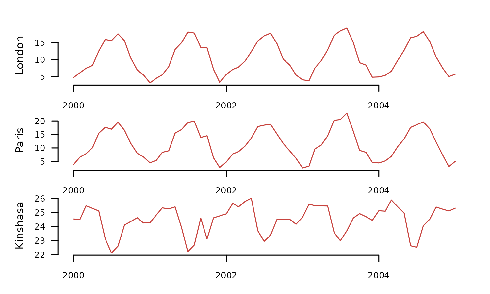
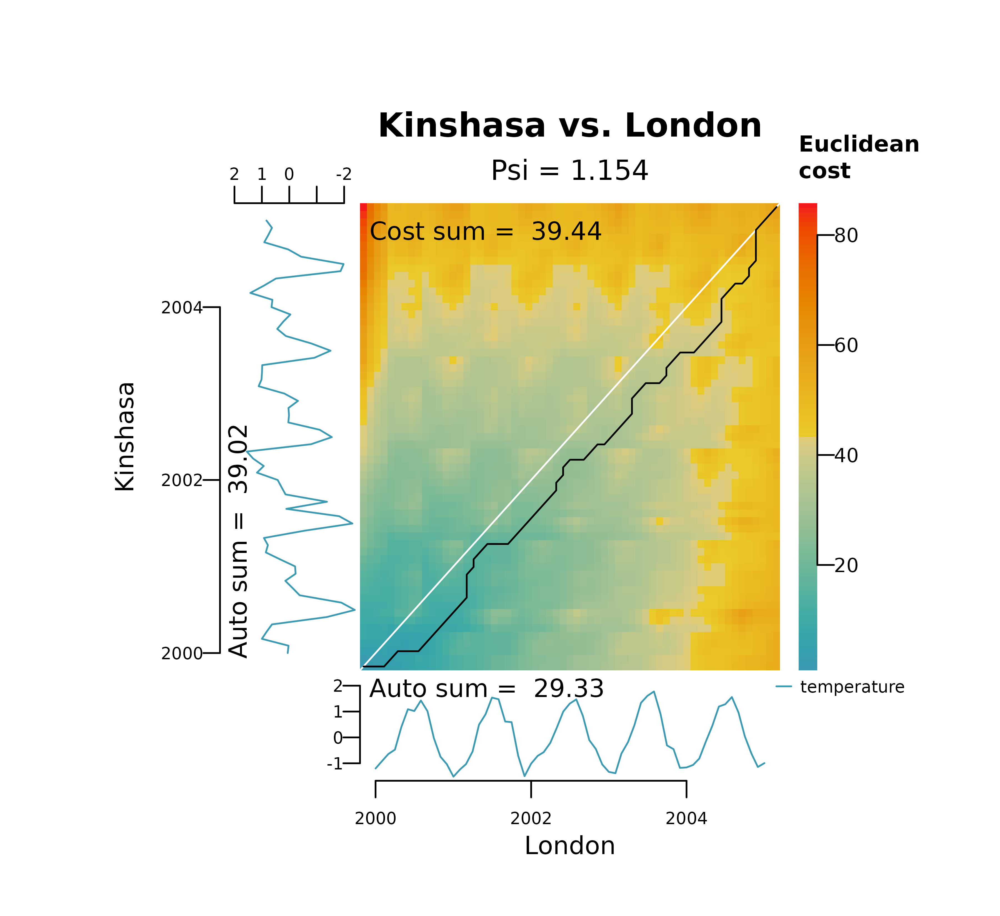

Dynamic Time Warping vs Lock-Step
Source:vignettes/articles/dynamic_time_warping_and_lock_step.Rmd
dynamic_time_warping_and_lock_step.RmdSummary
The R package distantia provides tools for comparing
time series through two distinct methods: dynamic time warping (DTW) and
lock-step (LS). These approaches cater to different analysis needs—DTW
for handling temporal shifts and LS for preserving temporal alignment.
This article explores the conceptual foundations of both methods, their
implementation in distantia, and showcases their practical
use with illustrative code examples and visualizations.
Example data
The cities_temperature dataset contains monthly
temperature records for 20 cities. Below, we transform it into a Time
Series List (TSL) and select a subset of three cities from 2000 to 2005
for demonstration
tsl_raw <- tsl_initialize(
x = cities_temperature,
name_column = "name",
time_column = "time"
) |>
tsl_subset(
names = c(
"London",
"Paris",
"Kinshasa"
),
time = c(
"2000-01-01",
"2005-01-01"
)
)
tsl_plot(
tsl = tsl_raw,
ylim = "relative"
)
The transformed TSL contains two synchronous time series with similar temperature ranges (London and Paris) and one (Kinshasa) with higher averages and a shifted temporal pattern.
To facilitate the comparison of DTW and LS, the code below applies
the functions tsl_transform() and f_scale to
center and scale the data.
tsl_scaled <- tsl_transform(
tsl = tsl_raw,
f = f_scale_local,
center = TRUE,
scale = TRUE
)
tsl_plot(
tsl = tsl_scaled
)
Lock-Step (LS)
Lock-step methods compare values at corresponding time points, requiring time series of the same length sampled at identical times. This approach is well-suited for cases where maintaining the temporal alignment of the compared time series is crucial. The method is straightforward and computationally efficient.
In distantia, lock-step comparisons are carried out in
three steps:
1.- Sum the distances between pairs of samples observed at the same time.
2.- Sum the distances between consecutive samples within each time series.
3.- Compute the normalized dissimilarity score psi.
Let’s look first at a native R implementation of this idea using euclidean distances to keep it simple.
#extracting the data to shorter variables
x <- tsl_scaled$London
y <- tsl_scaled$Kinshasa
#1.- sum of distances between pairs of samples
step_1 <- sum(sqrt((x - y)^2))
#2.- sum of distances between consecutive samples
step_2 <- sum(
sqrt(diff(x)^2) + sqrt(diff(y)^2)
)
#3.- compute normalized dissimilarity score
((2 * step_1) / step_2)
#> [1] 2.792455The function distantia() performs this task when
lock_step = TRUE (default is FALSE).
df <- distantia(
tsl = tsl_scaled[c("London", "Kinshasa")],
lock_step = TRUE,
distance = "euclidean"
)
#> Loading required package: foreach
#> Loading required package: future
df$psi
#> [1] 2.792455The function distantia() can compute LS-based
dissimilarity scores for time series in tsl at once.
df_LS <- distantia(
tsl = tsl_scaled,
lock_step = TRUE
)
df_LS[, c("x", "y", "psi")]
#> x y psi
#> 1 London Paris 0.2427342
#> 3 Paris Kinshasa 2.7153379
#> 2 London Kinshasa 2.7924554As expected, London and Paris show the most similar temperature time series, while London and Kinshasa are the most different ones.
Dynamic Time Warping
Dynamic Time Warping (DTW) aligns the time axes of two time series to maximize pattern similarity, even when temporal shifts are present. This makes DTW ideal for comparing time series with similar shapes but misaligned time points. However, it is computationally more intensive and less efficient than the lock-step method, particularly for large datasets.
DTW involves three conceptual steps, similar to the lock-step method, but with additional complexity in the first step:
1.- Sum the distances between pairs of samples.
1a Compute a distance matrix between all pairs of samples.
1b Build the least-cost matrix.
1c Find the least-cost path.
1d Sum distances along the least-cost path.
2.- Sum distances between consecutive samples within each time series.
3.- Calculate the normalized dissimilarity score psi (with a slightly different formula!).
Now, let’s dive into the code.
The objective of the step 1 is computing the sum of distances between pairs of samples matched together by the time warping algorithm.
It starts with step 1a, shown below, which computes
the distance matrix between all pairs of samples. Notice that all
functions to demonstrate the computation of the normalized dissimilarity
score psi follow the naming convention
psi...().
m.dist <- psi_distance_matrix(
x = x,
y = y,
distance = "euclidean"
)
utils_matrix_plot(
m = m.dist,
diagonal_width = 0
)
Step 1b involves transforming the distance matrix
into a cost matrix. This transformation requires a dynamic algorithm in
which each new cell adds its own distance to the distance accumulated by
its preceding neighbor. There are two implementations of this method in
distantia:
- orthogonal only: distance cost is only computed on the x and y axis, ignoring diagonals.
-
orthogonal and diagonal: distance cost is also
computed in diagonals, which are weighted by a factor of
1.414214.
These options are wrapped in the function
psi_cost_matrix(), which by default, like
distantia() uses weighted diagonals.
m.cost <- psi_cost_matrix(
dist_matrix = m.dist,
diagonal = TRUE #default
)
utils_matrix_plot(
m = m.cost,
diagonal_width = 0
)In step 1c, the distance and cost matrices are used to find the least-cost path.
m.cost.path <- psi_cost_path(
dist_matrix = m.dist,
cost_matrix = m.cost,
diagonal = TRUE #default
)
utils_matrix_plot(
m = m.cost,
path = m.cost.path
)
The time warping is implicit in the coordinates of the least cost path. For example, in the lower left corner of the plot above, the first sample of Kinshasa (column “y”) is paired with the samples 1 to 4 of London (column “x”). Please notice that the cost-path data frame has the origin cell in the last row.
tail(m.cost.path)
#> x y dist cost
#> 73 6 3 0.09001854 4.820301
#> 74 5 2 0.36818140 4.126921
#> 75 4 1 0.53175876 3.460522
#> 76 3 1 0.70059611 2.928764
#> 77 2 1 0.96840001 2.228167
#> 78 1 1 1.25976738 1.259767The step 1d finalizes the DTW logic by adding the
distances between pair of samples connected by the least-cost path. This
istep is just sum(m.cost.path$dist), but it is implemented
in psi_cost_path_sum(), which also checks that the path
file is correct.
step_1 <- psi_cost_path_sum(
path = m.cost.path
)
step_1
#> [1] 39.44194Step 2 returns the distances between consecutive
samples within each time series, as computed by
psi_auto_sum().
step_2 <- psi_auto_sum(
x = x,
y = y,
distance = "euclidean"
)
step_2Finally, in the step 3 we compute the normalized dissimilarity score.
psi <- psi_equation(
a = step_1,
b = step_2,
diagonal = TRUE
)All these individual steps can be performed at once with the function
distantia().
df <- distantia(
tsl = tsl_scaled[c("London", "Kinshasa")],
lock_step = FALSE, #default, lock step disabled
distance = "euclidean" #default
)
df[, c("x", "y", "psi")]
#> x y psi
#> 1 London Kinshasa 1.153969Additionally, the function distantia_plot() offers a
good graphical representation of the warping result and decomposes the
computation of the psi dissimilarity score.
distantia_plot(
tsl = tsl_scaled[c("London", "Kinshasa")]
)
Pitfalls
DTW is an ideal method to compare time series with temporal shifts, and is applicable to regular and irregular time series with the same or different numbers of samples.
However, DTW is highly sensitive to differences in ata magnitudes. When the data is not scaled and/or centered, the sensitivity to data magnitude of DTW may lead to local optima able to distort the warping.
The plot below represents the DTW alignment of London and Kinshasa on the raw temperature data. It shows two of these local optima, one in the y axis (long horizontal line), at the minimum temperature in Kinshasa (winter of 2001), and another in the x axis (long vertical line), at the maximum temperature in London (summer of 2003).
distantia_plot(
tsl = tsl_raw[c("London", "Kinshasa")]
)This is not a particular issue of the algorithm implemented in
distantia, but a general behavior of time warping methods.
The code below shows a similar analysis performed with the R package dtw. The
default implementation ignores diagonals when building the cost
matrix.
xy_dtw <- dtw::dtw(
x = tsl_raw$London$temperature,
y = tsl_raw$Kinshasa$temperature,
keep = TRUE
)
plot(xy_dtw, type = "threeway")The “twoway” plot provided by dtw shows the alingment as
a line bar, with the sample matches represented as dotted lines, and two
vertical lines highlighting the local optima
plot(xy_dtw, type = "twoway")
abline(v=0.13, col="red3", lwd = 2)
abline(v=0.70, col="black", lwd = 2)
Comparing DTW and LS
Dynamic Time Warping (DTW) and Lock-Step (LS) methods differ in scope and application.
DTW is ideal for comparing data that may be shifted in time due to positional differences, such as phenological time series observed across different hemispheres or elevations. It also facilitates the comparison of time series with varying lengths, observation periods, or sampling resolutions. This versatility makes DTW a general-purpose tool for time series analysis.
In contrast, LS is designed for synchronized time series that, at a minimum, must have the same length. While its scope is narrower, LS is more intuitive and accurate than DTW for comparing time series without time shifts, as it measures raw differences directly.
In essence, DTW, with its ability to adjust the time axis, answers the question, How similar can these two time series be?, while LS addresses the question, “How different are these two time series?”
The code below computes the dissimilarity score of the temperatures in Paris, London, and Kinshasa using DTW and LS and compares them in a data frame.
df_dtw <- distantia(
tsl = tsl_scaled
)
df_ls <- distantia(
tsl = tsl_scaled,
lock_step = TRUE
)
data.frame(
x = df_dtw$x,
y = df_dtw$y,
psi_dtw = round(df_dtw$psi, 3),
psi_ls = round(df_ls$psi, 3)
)
#> x y psi_dtw psi_ls
#> 1 London Paris 0.223 0.243
#> 2 London Kinshasa 1.154 2.715
#> 3 Paris Kinshasa 1.178 2.792For London and Paris, both DTW and LS show very similar values, because the time series are very similar and DTW cannot do much else to adjust them even more. On the other hand, DTW shows much lower values than LS when Kinshasa comes into play, as it compensates the seasonal shifts in these time series. In that sense, LS provides a more accurate image of the raw differences between these time series.
As a clear advantage, LS does not require data normalization for univariate time series, and therefore can provide a dissimilarity score in the same units of the variable at hand.
df_ls <- distantia(
tsl = tsl_raw,
lock_step = TRUE
)
df_ls[, c("x", "y", "psi")]
#> x y psi
#> 1 London Paris 0.4879081
#> 3 Paris Kinshasa 7.5416106
#> 2 London Kinshasa 9.3361647Comparing the dissimilarity scores above with the mean temperatures of the three cities below can give a sense of how approximate LS scores are to what we could expect.
Closing Thoughts
The distantia package strikes a balance between
flexibility and simplicity, enabling a more nuanced exploration of time
series data. With support for both dynamic time warping and lock-step
methods, it provides users with the tools needed to uncover insights
while respecting the unique constraints of their data. Whether you’re
working on sequence alignment or strict temporal comparisons,
distantia is designed to adapt to your analytical
needs.
I encourage you to give it a try and see how it fits into your workflows.